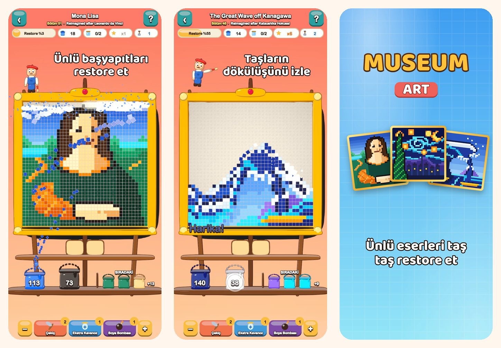

Museum Art
Piksel sanatı renk bulmacası
Bir renge dokun, taşların döküldüğünü izle. Mona Lisa’dan İstanbul, Paris, Roma ve New York’a kadar 51 piksel sanatı resmi restore et.
App Store’dan indirin
Oyun hakkında
Museum Art’taki her resim rengârenk kare taşlardan oluşur. Taşları renk renk temizle ve resmin yeniden parlamasını izle.
NASIL OYNANIR
- En alt sıraya değen bir renk bölgesine ya da raftaki bir kovaya dokun: taşlar kendi kovasına uçar.
- Üstteki taşlar kum gibi aşağı kayar ve yeni hamleler açılır.
- Bir rengin kovası henüz yok mu? Onu tepsideki bir kavanozda beklet.
- Tepsiyi ne kadar az kullanırsan o kadar çok yıldız kazanırsın.
RESTORE EDİLECEK 51 RESİM
- Başlangıç için parlak ve kolay sahneler: sıcak hava balonu, yelkenli, kedi ve deniz feneri.
- Doğa: karlı zirveler, dağ gölü, kiraz çiçekleri ve alacakaranlıkta bir çöl.
- İstanbul, Paris, Roma ve New York’u gezen bir dünya turu.
- Ustalar Kasası: Büyük Dalga, Yıldızlı Gece, Nilüferler, Sütçü Kız, İzlenim, Gün Doğumu ve Mona Lisa, piksel sanatıyla yeniden yorumlandı.
RAHAT VE ADİL
- Her bölüm güçlendirici kullanmadan çözülebilir ve yeniden denemek ücretsizdir.
- Zor anlar için güçlendiriciler: Çekiç, Ekstra Kavanoz ve Boya Bombası.
- Ayrıntılara istediğin zaman yakınlaş.
- Her resimle ilgili eğlenceli bir bilgi.
- 19 dilde oynanabilir.